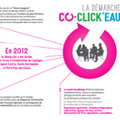
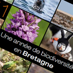

Plaquette de présentation du projet Co-clik'eau - Inra

Bilan scientifique du programme (en anglais) - Europôle mer

Exposition sur la biodiversité Bretagne - Espace des sciences

Dossier de presse du site bretagne-biodiversite.org - Espace des sciences

Vulgarisation et relectures de textes - Océanopolis

Articles de presse - Magazine Sciences Ouest

Rapports d'activité 2011 et 2012 - Espace des sciences